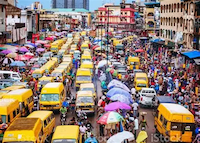

Akwa Ibom, Nigeria

Nigeria is a vibrant and diverse country located in West Africa, known for its rich cultural heritage, natural resources, and dynamic population. With over 200 million people, it is the most populous country in Africa and features more than 250 ethnic groups, including the Hausa, Yoruba, and Igbo. Nigeria’s landscape ranges from the arid Sahel in the north to lush rainforests in the south, and it is home to major rivers like the Niger and Benue. The country is a federal republic with 36 states and the Federal Capital Territory in Abuja, its capital.
Economically, Nigeria is one of Africa’s largest economies, heavily reliant on oil and gas exports, but also active in agriculture, telecommunications, and services. Despite its economic potential, Nigeria faces challenges such as corruption, unemployment, and infrastructure deficits. However, its youthful population, growing tech sector, and vibrant arts and entertainment industries — especially Nollywood and Afrobeat music — continue to shape its global identity and drive optimism for the future.